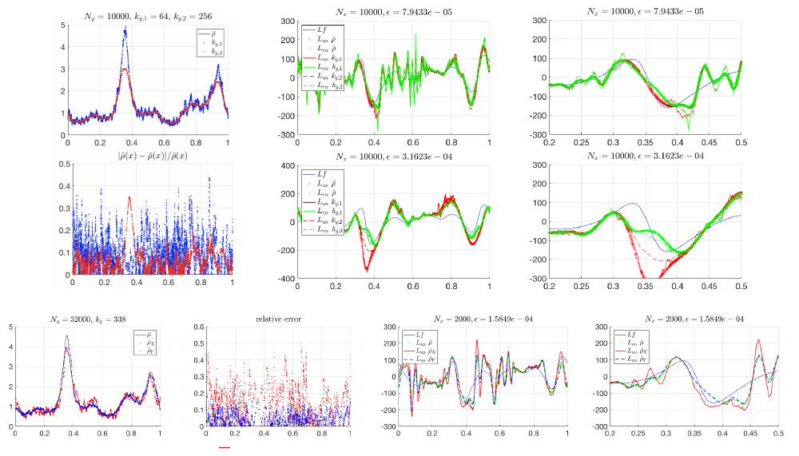
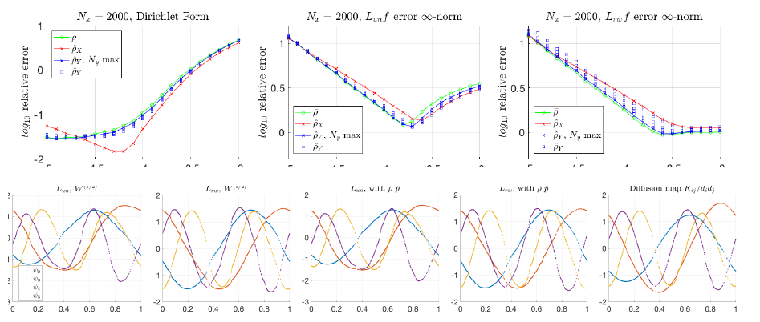
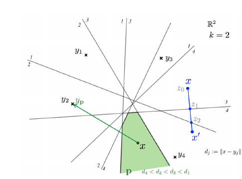
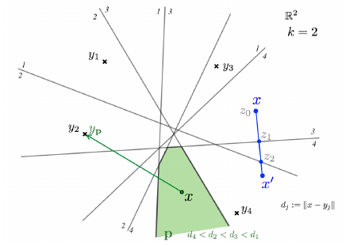

Paper: Cheng, Xiuyuan; Wu, Hau-Tieng. “Convergence of Graph Laplacian
with kNN Self-tuned Kernels.” arXiv:2011.01479v2 [math.ST], 2021.
Reviewer: Reviewer-P10 Auditor: Auditor-P10 Status: revised after audit
Date: 2026-05-15 Source manifest ID: P10 Canonical reading copy:
literature/conductance_kernel_laplacian_review/sources/pdf/P10_cheng_wu_knn_self_tuned_kernels.pdf
A mathematically capable reader should be comfortable with:
The paper studies a practical graph-building trick that is common in spectral clustering: instead of using one global kernel bandwidth for all points, each data point receives a local bandwidth equal to a kNN distance. Sparse regions get larger local bandwidths, dense regions get smaller local bandwidths, and edge weights are computed using the product of the two endpoint scales.
The hard question is not whether this works heuristically, but what
differential operator the resulting graph Laplacian approximates as the
sample size grows. Fixed-bandwidth graph Laplacian convergence was
already well studied. For kNN self-tuned bandwidths, the scale function
is random, nonsmooth, and has derivatives that do not converge to the
derivatives of the population scale. Cheng and Wu’s contribution is to
prove convergence anyway, with rates, by first proving uniform relative
C0 consistency of the kNN bandwidth estimate and then
conditioning graph-Laplacian analysis on that event.
The most important practical message is that local bandwidths reduce
variance problems in low-density regions. For fixed-bandwidth kernels,
pointwise variance terms worsen where the sampling density
p(x) is small. For the kNN self-tuned kernels in this
paper, the corresponding variance factor is favorable in low-density
regions because the bandwidth expands there.
The paper begins from the standard kernelized affinity
\[ \begin{aligned} W_{ij} &= k0(\Vert x_{i} - x_{j}\Vert ^2 / \epsilon) \end{aligned} \]
in equation (1), PDF p. 1. Given W, the standard graph
Laplacians are \(D - W\) and \(I - D^{-1}W\), with \(D_{ii} = sum_{j} W_{ij}\) (Section 1, PDF
pp. 1-2). The authors recall that, for samples from a smooth density
p on a smooth compact d-dimensional manifold
M, graph Laplacians can converge to intrinsic manifold
operators such as the Laplace-Beltrami operator \(\Delta_{M}\) or the weighted Laplacian
\[ \begin{aligned} \Delta_{p} &= \Delta_{M} + (grad_{M} p / p) dot grad_{M} \end{aligned} \]
from equation (2), PDF p. 2.
The specific gap is self-tuned bandwidth theory. Zelnik-Manor and Perona’s self-tuned spectral clustering used
\[ \begin{aligned} W_{ij} &= k0(\Vert x_{i} - x_{j}\Vert ^2 / (R_{i} R_{j})) \end{aligned} \]
where \(R_{i}\) is a kNN distance; this is equation (3), PDF p. 2. Cheng and Wu state that convergence results for this type of graph Laplacian were incomplete, especially when the bandwidth function is estimated from data rather than assumed known (Section 1, PDF pp. 2-3; Section 1.2, PDF pp. 5-6).
The paper introduces a one-parameter family of self-tuned affinities:
\[ \begin{aligned} W_{ij}^(\alpha) &= \\ k0(\Vert x_{i} - x_{j}\Vert ^2 / (\epsilon rho_{hat}(x_{i})rho_{hat}(x_{j}))) \\ / (rho_{hat}(x_{i})^\alpha rho_{hat}(x_{j})^\alpha). \end{aligned} \]
This is equation (4), PDF p. 2. The local bandwidth function \(rho_{hat}\) is estimated from a stand-alone
sample Y, while the graph itself is built on sample
X. This split reduces dependence in the proof and gives a
clean two-step analysis (Section 1.1, PDF p. 5).
The theoretical pipeline is:
Algorithm 1, PDF pp. 4-5, gives the practical construction using the raw kNN distances \(R_hat_i\):
\[ \begin{aligned} W_{ij} &= k0(\Vert x_{i} - x_{j}\Vert ^2 / (sigma_{0}^2 R_hat_i R_hat_j)) \\ / (R_hat_i^\alpha R_hat_j^\alpha). \end{aligned} \]
The algorithm computes either \(L_{un}\) through \(eig(D-W)\) or the modified random-walk operator through the generalized eigenproblem \(eig-gen(D-W, D D_{Rhat}^2)\).
[explicit] Fixed-bandwidth baseline: equation (1), PDF p. 1,
\[ \begin{aligned} W_{ij} &= k0(\Vert x_{i} - x_{j}\Vert ^2 / \epsilon). \end{aligned} \]
[explicit] Original self-tuned affinity: equation (3), PDF p. 2,
\[ \begin{aligned} W_{ij} &= k0(\Vert x_{i} - x_{j}\Vert ^2 / (R_hat_i R_hat_j)). \end{aligned} \]
[explicit] Cheng-Wu self-tuned family: equation (4), PDF p. 2,
\[ \begin{aligned} W_{ij}^(\alpha) &= \\ k0(\Vert x_{i} - x_{j}\Vert ^2 / (\epsilon rho_{hat}(x_{i})rho_{hat}(x_{j}))) \\ / (rho_{hat}(x_{i})^\alpha rho_{hat}(x_{j})^\alpha). \end{aligned} \]
[explicit] kNN bandwidth estimator: equation (6), PDF p. 7,
\[ \begin{aligned} rho_{hat}(x) &= R_{hat}(x) \, ( (1/m0[h]) \, (k/N_{y}) )^{-1/d}, \\ R_{hat}(x) &= inf{ r > 0 : sum_{j=1}^{N_{y}} 1_{\Vert y_{j}-x\Vert <r} \ge k }. \end{aligned} \]
Here \(R_{hat}(x)\) is the distance
from x to its k-th nearest neighbor in Y, and
\(m0[h] = int_{R}^d h(|u|^2) du\); for
\(h=1_[0,1)\), m0[h] is
the unit d-ball volume (Section 2.1, PDF p. 7).
[explicit] Population bandwidth:
\[ \begin{aligned} rho_{bar} &= p^{-1/d}. \end{aligned} \]
This appears in the Abstract, Table 1 on PDF p. 3, Section 2, and Theorem 2.3.
[explicit] Limiting operator for a smooth positive bandwidth \(\rho\): equation (9), PDF p. 9,
\[ \begin{aligned} L_{\rho}^(\alpha) &= \\ \Delta + 2 (\nabla p / p) dot \nabla \\ + (d - 2 \alpha + 2) (\nabla \rho / \rho) dot \nabla. \end{aligned} \]
[explicit] Limiting operator after substituting \(rho_{bar} = p^{-1/d}\): equation (10), PDF p. 9,
\[ \begin{aligned} L^(\alpha) &= \\ \Delta + (1 + 2(\alpha-1)/d) (\nabla p / p) dot \nabla. \end{aligned} \]
[explicit] Graph Dirichlet form: equation (11), PDF p. 10,
\[ \begin{aligned} E_{N}(f,f) &= \\ (2/(\epsilon m2 N^2)) \epsilon^{-d/2} f^T(D-W)f \\ &= (1/(\epsilon m2 N^2)) sum_{i,j} \epsilon^{-d/2} W_{ij} (f_{i}-f_{j})^2. \end{aligned} \]
[explicit] Kernelized Dirichlet-form kernel: equations (12)-(13), PDF p. 10,
\[ \begin{aligned} K_{hat}(x,y) &= \\ \epsilon^{-d/2} k0(\Vert x-y\Vert ^2 / (\epsilon rho_{hat}(x)rho_{hat}(y))) \\ / (rho_{hat}(x)^\alpha rho_{hat}(y)^\alpha), \\ E^(\alpha)(f,f) &= \\ (1/(\epsilon m2)) int_{M} int_{M} \\ (f(x)-f(y))^2 K_{hat}(x,y) p(x)p(y) dV(x)dV(y). \end{aligned} \]
[explicit] Self-tuned unnormalized graph Laplacian operator: equation (17), PDF p. 12,
\[ \begin{aligned} L_{un}^(\alpha) f(x) &= \\ (2 \epsilon^{-d/2-1}/(m2 rho_{hat}(x)^\alpha)) \\ (1/N) sum_{j} k0(\Vert x-x_{j}\Vert ^2/(\epsilon rho_{hat}(x)rho_{hat}(x_{j}))) \\ (f(x_{j})-f(x))/rho_{hat}(x_{j})^\alpha. \end{aligned} \]
[explicit] Modified random-walk graph Laplacian operator: equation (18), PDF p. 13,
\[ \begin{aligned} L_{rw0}^(\alpha) f(x) &= \\ (2/(\epsilon m2 rho_{hat}(x)^2)) \\ [ sum_{j} k0(\ldots) f(x_{j})/rho_{hat}(x_{j})^\alpha \\ / sum_{j} k0(\ldots)/rho_{hat}(x_{j})^\alpha \\ - f(x) ]. \end{aligned} \]
The paper notes that this differs from the usual random-walk matrix by multiplying another diagonal matrix \(D_rho_hat^{-2}\) up to constants and sign (Section 3.4, PDF p. 13).
The paper contains both theory-supporting synthetic experiments and an MNIST embedding demonstration.
p on a circle. The top row shows \(rho_{hat}\) and its relative error across
\(k_{y}\); the bottom row shows KDE
\(p_{hat}\) and relative error across
\(\epsilon\). The figure supports
Theorem 2.3 and Remark 2.2: kNN \(rho_{hat}\) has more spatially uniform
relative error, while KDE relative error worsens where p is
small.
p, the test function f, and the target \(\Delta_{p} f\). This supplies the testbed
for Figures 3-6.


X itself rather than stand-alone Y. This
addresses the practical self-tuned setup even though the main theory
uses a stand-alone Y.Y can reduce
bandwidth-estimation error and oscillation, but splitting a limited
dataset may worsen performance by reducing the graph sample size.


mu(x,r), and the local approximation \(m0[h]p(x)r^d\), with \(R_{hat}\), \(R_{bar}\), and bracketing radii \(R_-/R_+\).
Table 1, PDF p. 3, is a useful notation table. Table 2, PDF p. 6, is a roadmap linking bandwidth estimation to the convergence theorems for Dirichlet forms, pointwise operators, and weak forms.
[explicit] Under Assumption 2.1, M is a smooth compact
boundaryless d-manifold embedded in \(\mathbb{R}^{D}\), and p is
smooth and bounded above and below (PDF p. 7). Under Assumption 3.1,
k0 is nonnegative, sufficiently smooth, and exponentially
decaying through four derivatives (PDF p. 9).
[explicit] Lemma 2.1, PDF p. 7, proves that \(\widehat R\) is globally Lipschitz with Lipschitz constant at most 1 and is \(C^\infty\) off a finite union of hyperplanes.
[explicit] Proposition 2.2, PDF pp. 7-8, gives a fixed-point relative error:
\[ \begin{aligned} |rho_{hat}(x)-rho_{bar}(x)|/rho_{bar}(x) \\ &= O^[p]((k/N)^(2/d)) + O(\sqrt(\log N/k)) \end{aligned} \]
up to constants stated in the theorem. The theorem’s displayed bound is
\[ \begin{gathered} O^[p]((k/N)^(2/d)) + \sqrt(3 s \log N)/(d \sqrt(k)). \end{gathered} \]
[explicit] Theorem 2.3, PDF p. 8, upgrades this to uniform high-probability relative error:
\[ \begin{aligned} sup_{x} |rho_{hat}(x)-rho_{bar}(x)|/rho_{bar}(x) \\ &= O^[p]((k/N)^(2/d)) + \sqrt(39 \log N)/(d \sqrt(k)) \end{aligned} \]
with probability at least \(1 -
N^{-10}\) for large N.
[explicit] Remark 2.1, PDF p. 8, balances the bias \((k/N)^(2/d)\) and variance \(\sqrt(\log N/k)\) terms, giving \(k ~ N^(1/(1+d/4))\) up to logs and \(epsilon_{\rho} ~ N^(-1/(2+d/2))\).
[explicit] Remark 2.2, PDF p. 8, contrasts kNN \(rho_{hat}\) with fixed-bandwidth KDE. KDE
relative error has a variance factor proportional to \(p(x)^(-1/2)\), while kNN \(rho_{hat}\) has a uniform variance term
independent of p(x).
[explicit] Section 2.3, PDF pp. 8-9, proves a major technical
warning: although \(rho_{hat}\) is
C0 consistent, its derivative diverges. At
differentiability points, \(|grad_{bar}
R_{hat}(x)|=1\), so
\[ \begin{aligned} |grad_{bar} rho_{hat}(x)| &= ((1/m0[h]) k/N_{y})^(-1/d), \end{aligned} \]
which diverges like \((k/N_{y})^(-1/d)\) when \(k/N_{y} \to 0\). Thus \(\nabla rho_{hat}\) is not pointwise consistent for \(\nabla rho_{bar}\).
[explicit] Proposition 3.2, PDF p. 10, proves kernelized Dirichlet-form convergence:
\[ \begin{aligned} E^(\alpha)(f,f) &= \\ E_{p_{\alpha}}(f,f)(1 + O^[\alpha](epsilon_{\rho})) + O^[f,p](\epsilon), \\ p_{\alpha} &= p^(1 + 2(\alpha-1)/d). \end{aligned} \]
[explicit] Theorem 3.3, PDF p. 11, proves graph Dirichlet-form convergence under \(\epsilon=o(1)\), \(\epsilon^(d/2) N = Omega(\log N)\), and \(epsilon_{\rho}=o(1)\):
\[ \begin{aligned} E_{N}(f,f) &= \\ E_{p_{\alpha}}(f,f)(1 + O^[\alpha](epsilon_{\rho})) \\ + O^[f,p](\epsilon) \\ + O^[1]( \sqrt( (\log N)/(N \epsilon^(d/2)) \\ int_{M} |\nabla f|^4 p^(1+4(\alpha-1)/d) ) ). \end{aligned} \]
[explicit] Section 3.3, PDF p. 11, records the important special cases: \(\alpha=1\) gives \(p_{\alpha}=p\) and recovers \(\Delta_{p}\); \(\alpha=0\) gives \(p_{0}=p^(1-2/d)\) and corresponds to the original self-tuned graph’s modified density; \(\alpha=1-d/2\) gives constant \(p_{\alpha}\) and recovers \(\Delta_{M}\).
[explicit] Theorem 3.5, PDF p. 13, gives pointwise convergence for the modified random-walk operator under \(\epsilon=o(1)\), \(\epsilon^(d/2+1)N=Omega(\log N)\), and \(epsilon_{\rho}=o(\epsilon)\):
\[ \begin{aligned} L_{rw0}^(\alpha) f(x) &= \\ L^(\alpha) f(x) \\ + O^[f,p](\epsilon, epsilon_{\rho}/\epsilon) \\ + O^[1](\Vert \nabla f\Vert _infty p(x)^(1/d) \\ \sqrt(\log N/(N \epsilon^(d/2+1)))). \end{aligned} \]
[explicit] Theorem 3.6, PDF p. 14, gives the analogous pointwise result for the unnormalized operator:
\[ \begin{aligned} L_{un}^(\alpha) f(x) &= \\ p(x)^(2(\alpha-1)/d) L^(\alpha) f(x) \\ + O^[f,p](\epsilon, epsilon_{\rho}/\epsilon) \\ + O^[1](\Vert \nabla f\Vert _infty p(x)^((2alpha-1)/d) \\ \sqrt(\log N/(N \epsilon^(d/2+1)))). \end{aligned} \]
[explicit] Theorem 3.7, PDF p. 14, gives weak convergence for \(L_{un}^(\alpha)\) with error \(O(\epsilon, epsilon_{\rho})\) plus a variance term of order \(\sqrt(\log N/(N \epsilon))\). It removes the \(epsilon_{\rho}/\epsilon\) term but applies only in weak form and only to the unnormalized operator.
[explicit] Theorem 3.8, PDF p. 14, gives the fixed-bandwidth random-walk comparison. Its variance factor is \(p(x)^(-1/2)\), whereas Theorem 3.5 has the self-tuned factor \(p(x)^(1/d)\). The authors explicitly interpret this as the theoretical advantage of self-tuned bandwidths in low-density regions (end of Section 3.4, PDF p. 14).
[explicit] The main theory assumes compact, smooth, boundaryless manifolds and smooth density bounded away from zero and infinity (Assumption 2.1, PDF p. 7). This is strong relative to many real datasets with boundaries, singularities, mixed dimensions, or outliers.
[explicit] The graph-theory proof uses a stand-alone Y
sample to estimate \(rho_{hat}\); using
X itself is discussed and tested, but not the main theorem
setting (Section 1.1, PDF p. 5; Section 4.3, PDF pp. 17-18).
[explicit] The pointwise convergence theorem requires \(epsilon_{\rho}=o(\epsilon)\), while Dirichlet-form convergence only requires \(epsilon_{\rho}=o(1)\) (Theorems 3.3 and 3.5, PDF pp. 11 and 13). This is a real distinction for practical operator estimation.
[explicit] Section 2.3, PDF pp. 8-9, shows that the kNN bandwidth’s derivatives do not converge. The paper therefore cannot simply apply smooth variable-bandwidth theory to the random kNN scale.
[explicit] The authors defer fuller study of the random-walk graph Laplacian with self-tuned kernel after the Laplace-Beltrami eigenfunction experiment (Section 4.4, PDF p. 18).
[contextual] The paper proves operator and Dirichlet-form convergence, not spectral convergence of eigenvectors/eigenvalues with rates. It uses eigenvector experiments, but the main theorem set is not a spectral convergence theorem.
[contextual] The paper is about kernel weights on sample clouds, not graph conductance in the electrical-network sense. For our review, the affinity can be interpreted as a conductance-like edge weight, but that is our synthesis rather than the paper’s terminology.
This paper is a direct theoretical bridge between the practical self-tuning kernel of Zelnik-Manor and Perona and the variable-bandwidth diffusion-kernel theory represented by Berry-Harlim-style smooth bandwidth analysis. Its key methodological move is to handle the actual kNN-estimated scale rather than assuming a smooth density-derived bandwidth is already available.
For adaptive graph construction, the paper clarifies three issues that are easy to conflate:
C0 error, with better low-density variance behavior than
fixed-bandwidth KDE.[explicit] Standard fixed-bandwidth kernel, equation (1), PDF p. 1:
\[ \begin{aligned} W_{ij} &= k0(\Vert x_{i}-x_{j}\Vert ^2 / \epsilon). \end{aligned} \]
[explicit] Original self-tuned kernel, equation (3), PDF p. 2:
\[ \begin{aligned} W_{ij} &= k0(\Vert x_{i}-x_{j}\Vert ^2 / (R_hat_i R_hat_j)). \end{aligned} \]
[explicit] Cheng-Wu self-tuned family, equation (4), PDF p. 2:
\[ \begin{aligned} W_{ij}^(\alpha) &= \\ k0(\Vert x_{i}-x_{j}\Vert ^2 / (\epsilon rho_{hat}(x_{i})rho_{hat}(x_{j}))) \\ / (rho_{hat}(x_{i})^\alpha rho_{hat}(x_{j})^\alpha). \end{aligned} \]
[explicit] Algorithm 1 implementation kernel, equation (5), PDF p. 5:
\[ \begin{aligned} W_{ij} &= \\ k0(\Vert x_{i}-x_{j}\Vert ^2 / (sigma_{0}^2 R_hat_i R_hat_j)) \\ / (R_hat_i^\alpha R_hat_j^\alpha). \end{aligned} \]
The paper explains that \(sigma_{0} R_hat_i = \sqrt(\epsilon) rho_{hat}(x_{i})\) and
\[ \begin{aligned} \epsilon &= sigma_{0}^2 \, ((1/m0[h]) \, (k/N_{y}))^(2/d). \end{aligned} \]
Thus the practical algorithm does not need to know d,
even though the theory uses the normalized \(rho_{hat}\) (Section 1.1, PDF p. 5).
[explicit] Mixed normalization for Laplace-Beltrami recovery without
knowing d, equation (21), PDF p. 18:
\[ \begin{aligned} W_{ij} &= \\ k0(\Vert x_{i}-x_{j}\Vert ^2 / (\epsilon rho_{hat}(x_{i})rho_{hat}(x_{j}))) \\ / ((rho_{hat} p_{hat}^(1/2))(x_{i}) (rho_{hat} p_{hat}^(1/2))(x_{j})) \\ &= W_{ij}^(1) / (p_{hat}(x_{i})^(1/2) p_{hat}(x_{j})^(1/2)). \end{aligned} \]
[explicit] MNIST self-tuned kernels, equation (22), PDF p. 19:
\[ \begin{aligned} W_{ij}^(1) &= \\ k0(\Vert x_{i}-x_{j}\Vert ^2 / (sigma_{0}^2 R_hat_i R_hat_j)) \\ / (sigma_{0}^2 R_hat_i R_hat_j), \\ W_{ij}^0 &= \\ k0(\Vert x_{i}-x_{j}\Vert ^2 / (sigma_{0}^2 R_hat_i R_hat_j)) \\ / (sigma_{0}^2 R_hat_i R_hat_j \sqrt(mu_hat_i mu_hat_j)). \end{aligned} \]
[explicit] Basic graph Laplacians are \(D-W\) and \(I-D^{-1}W\), with \(D_{ii}=sum_{j} W_{ij}\) (Section 1, PDF p. 1).
[explicit] The practical algorithm computes eigenpairs using either \(eig(D-W)\) for \(L_{un}\) or \(eig-gen(D-W, D D_{Rhat}^2)\) for the modified random-walk operator (Algorithm 1, PDF p. 5).
[explicit] The normalized graph Dirichlet form is equation (11), PDF p. 10:
\[ \begin{aligned} E_{N}(f,f) &= \\ (1/(\epsilon m2 N^2)) sum_{i,j} \\ \epsilon^{-d/2} W_{ij} (f_{i}-f_{j})^2. \end{aligned} \]
[explicit] The limiting operator family is equation (10), PDF p. 9:
\[ \begin{aligned} L^(\alpha) &= \\ \Delta + (1 + 2(\alpha-1)/d) (\nabla p/p) dot \nabla. \end{aligned} \]
[explicit] The associated weighted density for the Dirichlet form is
\[ \begin{aligned} p_{\alpha} &= p^(1 + 2(\alpha-1)/d). \end{aligned} \]
This is stated in Proposition 3.2 and Theorem 3.3, PDF pp. 10-11.
[explicit] The paper’s tasks are graph-based geometric data analysis, unsupervised learning, spectral clustering, dimension-reduced embedding, and diffusion/operator approximation. These applications are named in Section 1, PDF pp. 1-2.
[explicit] The numerical tasks are kNN bandwidth estimation (Section
4.1), Dirichlet-form and \(L_{N} f\)
estimation (Section 4.2), stand-alone Y comparison (Section
4.3), Laplace-Beltrami eigenfunction recovery (Section 4.4), and MNIST
eigenvector embedding (Section 4.5).
[explicit] The paper motivates self-tuning because global bandwidth choice is challenging in high-dimensional or uneven-density data, and graph-Laplacian performance can be sensitive to that choice (Section 1, PDF p. 2).
[explicit] The authors state that existing convergence results for self-tuned kernels were incomplete when the bandwidth function is estimated from data (Section 1, PDF p. 2; Section 1.2, PDF pp. 5-6).
[explicit] The paper aims to show convergence of graph Laplacian operators and graph Dirichlet forms with rates for kNN self-tuned kernels (Abstract and Section 1, PDF pp. 1, 3-4).
[explicit] A major motivation is low-density robustness: self-tuned bandwidths enlarge in sparse regions, reducing variance relative to fixed bandwidths. This is stated in the Abstract, discussed after Theorem 3.8 on PDF p. 14, and demonstrated in Figures 1 and 8-9.
[derived] The stand-alone Y sample is partly a proof
device and partly a practical memory/computation option: if more samples
are available than can be used to build the graph, using the extra
samples for bandwidth estimation may improve \(rho_{hat}\) without enlarging
W. This inference follows from Section 1.1, PDF p. 5, and
Section 4.3, PDF pp. 17-18.
[derived] The \(\alpha\) parameter
is a conductance-normalization knob. Increasing or decreasing \(\alpha\) does not just rescale weights; it
changes the continuum density in the Dirichlet form from p
to \(p_{\alpha}=p^(1+2(\alpha-1)/d)\).
This follows from Proposition 3.2 and Theorem 3.3, PDF pp. 10-11.
[derived] The paper suggests that evaluating a local-scale graph smoother requires checking both the edge-length scale and the operator normalization. A graph can be locally adaptive but still converge to a density-biased operator if \(\alpha\) is not chosen for the intended limit.
[explicit] For \(\alpha=1\), \(L^(\alpha)=\Delta_{p}\), so the graph
approximates the weighted Laplacian associated with the sampling measure
p dV (Abstract; Section 3.3, PDF p. 11).
[explicit] For \(\alpha=1-d/2\), \(p_{\alpha}\) is constant and the Dirichlet form corresponds to the Laplace-Beltrami operator \(\Delta_{M}\) (Section 3.3, PDF p. 11; Section 4.4, PDF p. 18).
[explicit] For \(\alpha=0\), the original self-tuned graph approximates a weighted Laplacian with modified density \(p^(1-2/d)\) (Section 3.3, PDF p. 11).
[explicit] Figure 7, PDF p. 18, shows that the first four nontrivial graph eigenvectors approximate sine/cosine Laplace-Beltrami eigenfunctions on \(S^1\), with random-walk variants visually better in that example.
[explicit] The modified random-walk pointwise variance term in Theorem 3.5 has factor \(p(x)^(1/d)\), while the fixed-bandwidth comparison in Theorem 3.8 has \(p(x)^(-1/2)\) (PDF p. 14). This means the self-tuned operator should be less noisy in sparse regions.
[derived] For smoothing, the Dirichlet-form result is more directly relevant to energy penalties such as \(f^T L f\); it has an \(O(epsilon_{\rho})\) bandwidth-estimation contribution rather than the stricter \(O(epsilon_{\rho}/\epsilon)\) pointwise operator contribution. This follows from Theorems 3.3 and 3.5.
[explicit] The local scale is the kNN radius \(R_hat_i\), and the edge scale is the geometric product \(R_hat_i R_hat_j\) or normalized version \(rho_{hat}(x_{i})rho_{hat}(x_{j})\) (equations (3)-(6), PDF pp. 2, 5, 7).
[explicit] The population local scale is \(rho_{bar}=p^{-1/d}\) (Abstract; Table 1, PDF p. 3; Theorem 2.3, PDF p. 8). Thus denser regions have smaller bandwidths and sparser regions have larger bandwidths.
[explicit] The paper connects directly to original self-tuning spectral clustering and nearest-neighbor density estimation in Section 1.2, PDF pp. 5-6.
[contextual] Relative to smooth variable-bandwidth papers, this paper handles the empirically common kNN scale. It is not merely a special case of smooth variable bandwidth, because Section 2.3 shows derivative inconsistency.
[derived] For a conductance comparator, equation (4) can be read as a local-scale conductance rule: edge weight is a decreasing function of squared distance divided by local endpoint scales, with an additional endpoint amplitude normalization. The distance denominator and the \(\alpha\) normalization should be treated as separate design choices.
[explicit] The paper does not claim that kNN \(rho_{hat}\) is C1 consistent.
It proves the opposite in Section 2.3, PDF pp. 8-9.
[explicit] The main theory does not require knowing d in
Algorithm 1, but the theoretical statement and normalization of \(rho_{hat}\) use d (Section
1.1, PDF p. 5; equation (6), PDF p. 7).
[explicit] The main proofs do not analyze the fully dependent case
where the same finite sample X is both graph sample and
bandwidth-estimation sample, although Section 4.3 studies it
empirically.
[contextual] The paper does not claim that all self-tuned kernels recover \(\Delta_{M}\) or \(\Delta_{p}\). The limit depends on \(\alpha\), and recovering \(\Delta_{M}\) requires \(\alpha=1-d/2\) or the mixed normalization in equation (21).
[contextual] The paper does not develop SIMODS/gflow, Mapper/Riemannian complexes, overlap-density smoothing, or electrical network conductance models.
[contextual] Current gflow overlap-density smoothing
should remain distinct from Cheng-Wu self-tuned graph kernels. The
current fit.rdgraph.regression() semantics are based on
overlap-density/Riemannian-complex graph structure, not on Euclidean
point-cloud kNN radii or the self-tuned kernel in equation (4).
[derived] P10 is highly relevant for planned length/kernel-conductance comparators. It gives a principled candidate edge-weight family:
\[ \begin{gathered} conductance_{ij} ~ \\ k0(length_{ij}^2 / (\epsilon local_scale_i local_scale_j)) \\ / (local_scale_i^\alpha local_scale_j^\alpha), \end{gathered} \]
where the population interpretation of \(local_{scale}\) is density-adaptive length. In a SIMODS comparator, \(local_scale_i\) could be defined from kNN distances, local cell density, or graph-neighborhood lengths, but that would be a new comparator, not a reinterpretation of the current overlap-density smoother.
[derived] The paper’s separation between Dirichlet-form convergence and pointwise operator convergence is useful for SIMODS. If the planned comparator is used as a smoothing penalty, the Dirichlet-form theory is the closer analogy. If it is used as a pointwise Laplacian operator, the stricter pointwise conditions and \(epsilon_{\rho}/\epsilon\) term become more relevant.
[derived] The density-effect result suggests a testable SIMODS hypothesis: fixed global length kernels may over-penalize or disconnect sparse regions, while local-scale kernels may stabilize smoothing across nonuniform sampling. This should be tested as a comparator against the existing overlap-density smoother rather than blended into its current semantics.
Reproduced cropped figure panels for Figures 1–11 are managed by
paper_figure_screenshots.yml and embedded in the generated
HTML memo next to the primary figure descriptions. These are
internal-review cropped figure panels from the canonical reading copy,
not manuscript-ready reused figures.
No original explanatory figure was created for P10. A useful synthesis figure, if desired later, would compare fixed bandwidth, kNN local scale, and \(\alpha\) endpoint normalization as three separate knobs in a conductance/kernel comparator.
| Claim | Label | Source reference | Notes |
|---|---|---|---|
| The paper studies graph Laplacian convergence for kNN self-tuned kernels with estimated bandwidths. | explicit | Abstract, PDF p. 1; Section 1, PDF pp. 2-4 | Central paper claim. |
| Standard fixed-bandwidth affinity is \(W_{ij}=k0(\Vert x_{i}-x_{j}\Vert ^2/\epsilon)\). | explicit | Eq. (1), PDF p. 1 | Baseline kernel. |
| Original self-tuned affinity uses kNN distances in the denominator product \(R_hat_i R_hat_j\). | explicit | Eq. (3), PDF p. 2 | Cites Zelnik-Manor and Perona. |
| Cheng-Wu’s family divides by \(rho_hat_i^\alpha rho_hat_j^\alpha\). | explicit | Eq. (4), PDF p. 2 | \(\alpha\) selects limiting operator. |
| The practical algorithm uses raw kNN distances \(R_hat_i\) and parameter \(sigma_{0}\). | explicit | Algorithm 1 and Eq. (5), PDF pp. 4-5 | Does not require knowing d. |
| The kNN bandwidth estimator is normalized from the k-th neighbor distance and targets \(rho_{bar}=p^{-1/d}\). | explicit | Eq. (6), PDF p. 7; Theorem 2.3, PDF p. 8 | Theoretical normalization uses d. |
| \(R_{hat}\) is Lipschitz and piecewise smooth off hyperplanes. | explicit | Lemma 2.1, PDF p. 7; Fig. 10, PDF p. 20 | Used for uniform convergence proof. |
| Uniform relative error of \(rho_{hat}\) is bounded by bias \((k/N)^(2/d)\) plus variance \(\sqrt(\log N/k)\). | explicit | Theorem 2.3, PDF p. 8 | High-probability C0 result. |
| Optimal kNN scaling is \(k ~ N^(1/(1+d/4))\) up to logs. | explicit | Remark 2.1, PDF p. 8 | Balances bias and variance. |
| kNN \(rho_{hat}\) has better low-density relative variance behavior than fixed-bandwidth KDE. | explicit | Remark 2.2, PDF p. 8; Fig. 1, PDF p. 15 | KDE relative variance includes \(p(x)^(-1/2)\). |
\(rho_{hat}\) is not
C1 consistent; its derivative diverges. |
explicit | Section 2.3, PDF pp. 8-9 | Key technical obstacle. |
| The limiting random-walk operator is \(L^(\alpha)=\Delta+(1+2(\alpha-1)/d) \nabla p/p dot \nabla\). | explicit | Eq. (10), PDF p. 9 | After substituting \(rho_{bar}=p^{-1/d}\). |
| The graph Dirichlet form converges to the differential Dirichlet form for \(p_{\alpha}=p^(1+2(\alpha-1)/d)\). | explicit | Proposition 3.2 and Theorem 3.3, PDF pp. 10-11 | Relevant to smoothing penalties. |
| \(\alpha=1\) recovers \(\Delta_{p}\); \(\alpha=1-d/2\) recovers \(\Delta_{M}\); \(\alpha=0\) gives modified density \(p^(1-2/d)\). | explicit | Section 3.3, PDF p. 11 | Important normalization map. |
| Pointwise convergence requires \(epsilon_{\rho}=o(\epsilon)\). | explicit | Theorem 3.5, PDF p. 13; Theorem 3.6, PDF p. 14 | Stricter than Dirichlet-form convergence. |
| Weak convergence of \(L_{un}\) removes the \(epsilon_{\rho}/\epsilon\) term. | explicit | Theorem 3.7, PDF p. 14 | Only weak form and unnormalized operator. |
| Fixed-bandwidth pointwise variance worsens in low-density regions; self-tuned variance improves there. | explicit | Theorem 3.8 and following paragraph, PDF p. 14 | Fixed factor \(p^(-1/2)\) versus self-tuned \(p^(1/d)\) in Theorem 3.5. |
Stand-alone Y can improve bandwidth estimation when
many extra samples are available, but splitting limited data may
hurt. |
explicit | Section 4.3, PDF pp. 17-18; Figs. 5-6 | Practical caveat. |
| MNIST fixed-bandwidth embeddings show outliers with large kNN distances; self-tuned kernels are more stable. | explicit | Section 4.5, PDF pp. 19-20; Figs. 8-9 | Empirical support for low-density robustness. |
| P10’s affinity can serve as a planned SIMODS length/kernel-conductance comparator. | derived | Eq. (4), PDF p. 2; SIMODS review context | Comparator only; not current gflow overlap-density
semantics. |
Current fit.rdgraph.regression() overlap-density
smoothing is distinct from this paper’s kNN self-tuned point-cloud
kernel. |
contextual | SIMODS/gflow review context; P10 methods throughout | Important scope boundary for H005. |
Auditor-P10 requested that the final synthesis distinguish kNN bandwidth estimation from graph support. P10 studies kNN/self-tuned scales and graph Laplacian convergence; do not imply that bandwidth estimation and support construction are the same design choice.
SIMODS/gflow clarification for synthesis: current
fit.rdgraph.regression() uses
overlap-density/Riemannian-complex conductance. P10 supports planned kNN
self-tuned kernel-conductance comparators, not the existing gflow
operator semantics.
Add an operator-normalization caveat for special \(\alpha\) choices. The meaning of \(\alpha=1\) or other values depends on the paper’s operator and normalization, so avoid transferring a default between P03/P04/P10 without restating the construction.
Treat the MNIST/outlier result as secondary empirical evidence, not as a convergence proof.
2026-05-15: Initial Reviewer-P10 memo drafted from the 60-page canonical PDF. Full text, theorem statements, proof figures, and experimental figures/tables were reviewed.